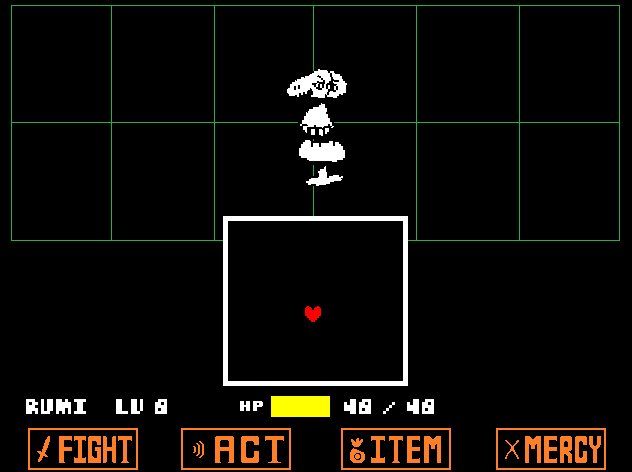
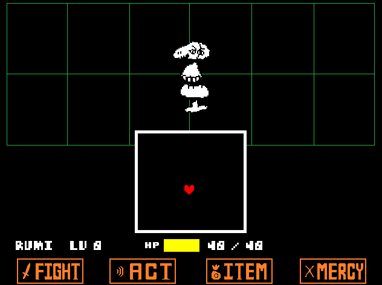

Undertale! Un des plus grand jeux indépendant de l'année 2015 et qui continue à faire parler de lui sur internet aujourd'hui. En effet ce jeu a vu se former une énorme communauté d'amoureux qui continue à faire vivre le jeu via de nombreux dessins (fanart) et de nombreuses histoires de fan (fanfiction).
C'est un jeu indépendant qui a majoritairement été financé grâce au financement participatif. Il était demandé à la base une somme de 5 000$ et en a récolté pas moins de 51 124 $ pour 2 398 participants.
Cette campagne de financement a été lancée par Toby Fox, qui a développé presque l'intégralité du jeu tout seul grâce au système de création de jeux: GameMaker Studio.
L'histoire d'Undertale est plutôt simple à première vue.
Vous incarnez un humain qui tombe dans "l'underground" une des parties d'un monde gouverné par les monstres. Votre objectif sera de sortir du monde des monstres afin de retourner dans le monde des humains, tout simplement.
Mais bien evidemment l'histoire et le background se développeront au fil de l'aventure, comme par exemple la proximité entre les monstres et les humains, ou bien encore ce que veulent faire les monstres de votre joli minois.
Avis aux âmes sensibles, car Undertale est très TRES bien écrit et cela se retrouve dans les différents personnages que l'on rencontrera. Ainsi, vous risquez énormément de vous attacher à eux. Les larmes et les rires seront au rendez vous.
La réponse est oui! Undertale se démarque des autres rpg du genre par son système de combat. En effet il mélange des mécaniques du rpg japonais et du shoot'em up. Les rpg japonais se basent sur une action au tour par tour laissant au joueur le temps de bien choisir sa stratégie le tout à travers des menus où il choisira l'action à réaliser. Quand au shoot'em up on a une action survoltée où le joueur se contente de tirer tout en évitant une floppée de projectiles.
Comment Undertale fait-il pour mélanger ces 2 genres? Eh bien le combat se déroule comme dans un rpg japonais avec son lot de menu et d'action. Si on se décide à attaquer, il faudra appuyer sur un bouton au bon moment afin de faire un maximum de dégat. Par contre quand c'est au tour de l'ennemi, on enclenche la phase shoot'em up. Notre personnage est symbolisé par un petit coeur et il faudra esquiver les attaques diverses de notre adversaire. Et des attaques, il y en a!
 

De plus Undertale est plein de surprises, que ce soit dans les combats ou l'histoire. Il y a par exemple 3 types de parties que l'on peut faire et qui dépendra de nos actions avec de nombreuses fins différentes possibles. Du coup nos actions risquent de changer drastiquement notre partie et cela peut rendre la partie plus dure, plus éprouvante émotionnellement ou même plus frustrante.
Il y a notamment des combats beaucoup plus durs que tout les autres du jeu et qui risquent de vous tenir en haleine plusieurs jours.
Undertale à une mécanique très originale. En combat on a le choix d'attaquer l'adversaire mais aussi de lui parler. Par cette mécanique le combat change complètement. Il ne s'agit plus de faire le plus de dégats possible mais bien de comprendre l'adversaire, de dépasser les apparences afin de le convaincre d'arrêter les hostilités et même se faire un nouvel ami. Un gros message d'amour pour résumer. Et c'est ce qui fais la beauté de ce jeu, on est constament surpris, investi, on rigole, on pleure et lorsqu'on termine le jeu une fois, on ne l'a pas vraiment terminé.
Toby Fox a mis beaucoup de lui en ce jeu et on le ressent.